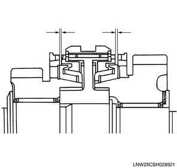
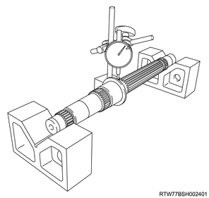
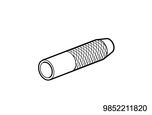
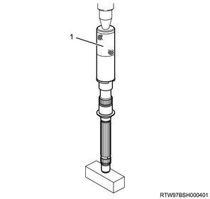
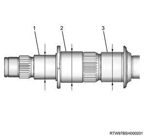
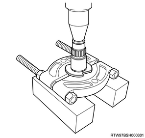

Counter shaft inspection (MUX)
1. Reverse block ring inspection
1. Inspect the reverse block ring.
Note
- Replace parts as needed if excessive worn or damage is discovered during inspection.
2. Measure the reverse block ring using a feeler gauge.
Note
- Measure the gap between the block ring and the dog gear.
- Replace the reverse block ring if the measured value exceeds the limit.
Standard： 1.5 mm { 0.059 in }
Limit： 0.8 mm { 0.031 in }

2. 1st - 2nd synchronizer assembly inspection
1. Inspect the 1st - 2nd synchronizer assembly.
Note
- Replace parts as needed if excessive worn or damage is discovered during inspection.
2. Measure the 1st - 2nd synchronizer assembly using a feeler gauge.
Note
- Replace the 1st - 2nd synchronizer assembly if the measured value exceeds the limit.
Standard： 1.5 mm { 0.059 in }
Limit： 0.8 mm { 0.031 in }

3. Insert inspection
1. Inspect the insert.
Note
- Replace parts as needed if excessive worn or damage is discovered during inspection.
2. Measure the insert using a vernier caliper.
Note
- Measure the gap between the insert and block ring.

Note
- Replace the insert and block ring if the measured value exceeds the limit.
| Standard value | Limit | |
| 1st - 2nd | ： 3.86 to 4.16 mm { 0.152 to 0.164 in } | ： 4.4 mm { 0.173 in } |
| Reverse | ： 2.16 to 2.46 mm { 0.085 to 0.097 in } | ： 2.7 mm { 0.106 in } |
3. Measure the insert using a feeler gauge.
Note
- Measure the gap between the insert and the clutch hub.

| Standard value | Limit | |
| 1st - 2nd, reverse | ： 0.01 to 0.21 mm { 0.0004 to 0.0083 in } | ： 0.3 mm { 0.0118 in } |
4. Counter shaft inspection
1. Inspect the counter shaft.
Note
- Replace parts as needed if excessive worn or damage is discovered during inspection.
2. Put the counter shaft on the V-block.
3. Measure fluctuation using a dial gauge.
Note
- Replace the counter shaft if the measured value exceeds the limit.
Limit： 0.05 mm { 0.002 in }

4. Install the 1st counter gear collar to the counter shaft using special tool.
Note
- Install using a press and bearing installer.

SST: 9-8522-1182-0 - bearing installer

- Bearing installer
5. Measure outer diameter using the micrometer.
Note
- Replace the counter shaft and the 1st counter gear collar if the measured value exceeds the limit value.
| Standard value | Limit | |
| 1st | ： 46.954 to 46.965 mm { 1.8486 to 1.8490 in } | ： 46.954 mm { 1.8486 in } |
| 2nd | ： 46.975 to 46.991 mm { 1.8494 to 1.8500 in } | ： 46.975 mm { 1.8494 in } |
| Reverse | ： 36.975 to 36.991 mm { 1.4557 to 1.4563 in } | ： 36.975 mm { 1.4557 in } |

- Counter reverse gear installation position
- 1st counter gear installation position
- 2nd counter gear installation position
6. Remove the 1st counter gear collar from the counter shaft using the press.

5. 1st counter gear inspection
1. Inspect the 1st counter gear.
Note
- Replace parts as needed if excessive worn or damage is discovered during inspection.
2. Measure the 1st counter gear using a dial gauge.
Note
- Measure the inner diameter of the 1st counter gear using an inside dial gauge.
- Replace the 1st counter gear if the measured value exceeds the limit.
Standard： 53.000 to 53.019 mm { 2.0866 to 2.0874 in }
Limit： 53.019 mm { 2.0874 in }

6. 2nd counter gear inspection
1. Inspect the 2nd counter gear.
Note
- Replace parts as needed if excessive worn or damage is discovered during inspection.
2. Measure the 2nd counter gear using a dial gauge.
Note
- Measure the inner diameter of the 2nd counter gear using an inside dial gauge.
- Replace the 2nd counter gear if the measured value exceeds the limit.
Standard： 53.000 to 53.019 mm { 2.0866 to 2.0874 in }
Limit： 53.019 mm { 2.0874 in }
7. Counter reverse gear inspection
1. Inspect the counter reverse gear.
Note
- Replace parts as needed if excessive worn or damage is discovered during inspection.
2. Measure the counter reverse gear using a dial gauge.
Note
- Measure the inner diameter of the counter reverse gear using an inside dial gauge.
- Replace the counter reverse gear if the measured value exceeds the limit.
Standard： 42.000 to 42.016 mm { 1.6535 to 1.6542 in }
Limit： 42.016 mm { 1.6542 in }
8. 1st - 2nd clutch hub inspection
1. Inspect the 1st - 2nd clutch hub.
Note
- Replace parts as needed if excessive worn or damage is discovered during inspection.
2. Measure play using a dial gauge.
Note
- Measure the play on the outer regions of the 1st - 2nd clutch hub in the rotational direction of the spline.
- Replace the 1st - 2nd clutch hub if the measured value exceeds the limit.
Standard： 0.00 to 0.04 mm { 0.0000 to 0.0016 in }
Limit： 0.10 mm { 0.0039 in }

9. Reverse synchronizer assembly inspection
1. Inspect the reverse synchronizer assembly.
Note
- Replace parts as needed if excessive worn or damage is discovered during inspection.
2. Measure play using a dial gauge.
Note
- Measure the play on the outer regions of the reverse synchronizer in the rotational direction of the spline.
- Replace the reverse synchronizer assembly if the measured value exceeds the limit value.
Standard： 0.000 to 0.107 mm { 0.0000 to 0.0042 in }
Limit： 0.15 mm { 0.0059 in }
10. 3rd gear inspection
1. Inspect the 3rd gear.
Note
- Replace parts as needed if excessive worn or damage is discovered during inspection.
2. Measure play using a dial gauge.
Note
- Measure the play of the spline.
- Move the gear left and right to settle it.
- Replace the 3rd counter gear if the measured value exceeds the limit.
Standard： 0.013 to 0.121 mm { 0.0005 to 0.0048 in }
Limit： 0.15 mm { 0.0059 in }
11. 5th gear inspection
1. Inspect the 5th gear.
Note
- Replace parts as needed if excessive worn or damage is discovered during inspection.
2. Measure play using a dial gauge.
Note
- Measure the play of the spline.
- Move the gear left and right to settle it.
- Replace the 5th gear if the measured value exceeds the limit.
Standard： 0.013 to 0.121 mm { 0.0005 to 0.0048 in }
Limit： 0.15 mm { 0.0059 in }
12. Counter shaft inspection
1. Inspect the output counter gear.
Note
- Replace parts as needed if excessive worn or damage is discovered during inspection.
2. Measure play using a dial gauge.
Note
- Measure the play of the spline.
- Move the gear left and right to settle it.
- Replace the output counter gear if the measured value exceeds the limit.
Standard： 0.013 to 0.121 mm { 0.0005 to 0.0048 in }
Limit： 0.15 mm { 0.0059 in }
13. Counter shaft front bearing inspection
1. Inspect the counter shaft front bearing.
Note
- Replace parts as needed if excessive worn or damage is discovered during inspection.
2. Measure play using a dial gauge.
Note
- Replace the counter shaft front bearing if the measured value exceeds the limit.
Limit： 0.098 mm { 0.0039 in }

14. Counter shaft rear bearing inspection
1. Inspect the counter shaft rear bearing.
Note
- Replace parts as needed if excessive worn or damage is discovered during inspection.
2. Measure play using a dial gauge.
Note
- Replace the counter shaft rear bearing if the measured value exceeds the limit.
Limit： 0.123 mm { 0.0048 in }